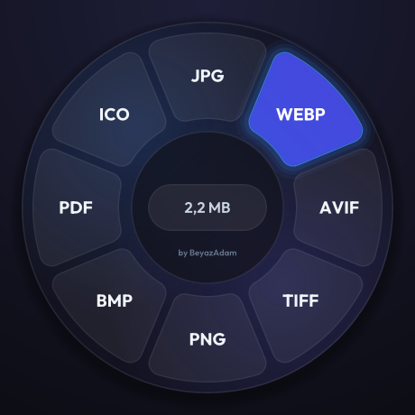

%100 çevrimdışı · ağ kodu yok
Sürükle. Shift'e bas. Bırak.
Mandalina sistem tepsisinde yaşar; görselleri ve PDF'leri tamamen kendi bilgisayarınızda küçültür ve dönüştürür. Hiçbir dosya bir siteye yüklenmez.
~7 MB tek dosya · kurulum yok · MIT lisansı

Neler yapar?
Nasıl kullanılır?
Orijinal dosyalara asla dokunulmaz: çıktılar kaynağın yanındaki Sıkıştırılmış/ klasörüne yazılır. Shift basılıyken Explorer sürüklemeyi "taşı" olarak başlatsa da çark her zaman "kopyala" yanıtı verir. Klavye kancası, telemetri ya da güncelleme denetimi yoktur.